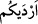
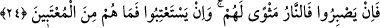

şeylerden haberdâr olduğu gibi, görünmez ve gizli şeylere de muttalîdir. İki zan türü
arasındaki başkalık açıktır ki ‘Allah’ın bilmediğini zannetmek’, ‘Rab hakkında beslenen
zandan başka bir şeydir. Dolayısıyla onun haberi olması sahihtir.
(
) cümlesi, ikinci haber olup helâk ettiren, ateşe attıran demektir. Çünkü iki cihan
mutluluğu için gerekli olan akıl ve organlar kendilerine bahşedildiği halde, bu özellikler
her iki cihanda da bedbaht olmalarına yol açmıştır. Âhiret bedbahtlığına nasıl yol açtığı
âşikârdır; dünya bedbahtlığına nasıl yol açtığına gelince, bu özellikler -kendi kötü
tercihleri yüzünden- Yüce Allah ve sıfatları hakkında cehl-i mürekkep/katmerli cehâlet
sahibi olmalarına, kendi keyif ve arzularına uyarak mâsiyet işlemelerine sebebiyet
vermiştir.
et-Te’vîlâtü’n-Necmiyye’de der ki: “Hüsrâna uğrayanlardan”; yani, ruhları cisim
topraklarına saçıldığı halde, onları îman ve amel-i sâlih suyuyla sulamadıkları için
hüsrâna uğrayan ziyankârlardan oldular; böylece ruhları bozuldu ve tıpkı cesedler gibi
akledemeyen kör, sağır ve dilsizler hâline geldi.
Bahru’l-’ulûm’da ise şöyle der: Tam anlamıyla hüsrâna uğrayanlardan oldular; çünkü
Allah hakkında sû-i zan beslediler; O’nun hakkında sû-i zan beslemek -meselâ dünyaya
bağlanmak- ise, “büyük günah”ların en büyüklerindendir.
Hasan (r.a.) der ki; kuruntularının kendilerini Allah’tan alıkoyduğu bir toplum bu
şekilde dünyadan ayrıldığı takdirde, bunlar için hiçbir güzellik/iyilik (hasene) söz
konusu olmaz. Biri; “Ben Rabbime karşı hüsn-i zan besliyorum” der, ama yalan
söylemektedir. Hüsn-i zan beslemiş olsaydı, amelî hayatı da güzel olurdu. Hasan daha
sonra “Rabbiniz hakkında beslediğiniz zan var ya, işte sizi o mahvetti ve ziyâna
uğrayanlardan oldunuz.” âyetini okudu.
Demek ki iki tür zan var: Biri necâta erdiren zandır ki bu güzel inanç ve sâlih amelle
birlikte olur; diğeri de alçaltan zandır ki bu iki özellikten yoksun olan zandır. O hale
göre çalışmak lâzım!..
Bu kapıda hiç kimsenin gayreti zâyi edilmez, ne kadar çok ferman dinler itâat edersen,
o kadar çok ferman sahibi olursun!
24. Şimdi eğer dayanabilirlerse, onların yeri ateştir. Ve eğer (tekrar dünyaya
dönüp Allah’ı) hoşnut etmek isterlerse, memnun edilecek değillerdir.
“Şimdi eğer dayanabilirlerse” Cehennem ateşindeki azâba sabredip ‘Sabır
kurtuluşun anahtarıdır’ düşüncesiyle içinde bulundukları durumdan dolayı feryâd ü figan
etmez, yardım istemekten kendilerini alabilirlerse “onların yeri ateştir.” Kurtuluş
ümidi bulunmayan kesin ve kalıcı ikametgâhları, barınakları Cehennem ateşidir…
Demek ki, sabretmeleri kendilerine hiçbir fayda sağlamayacaktır.